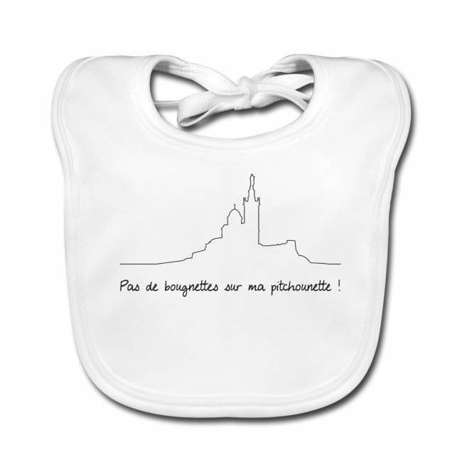
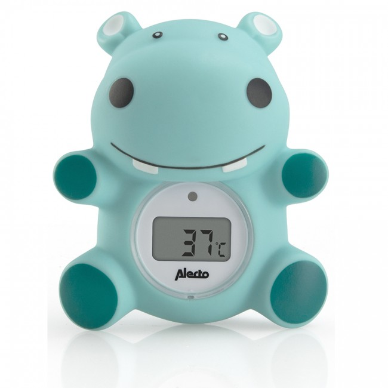

Liste de naissance pour le petit Maxime
Depuis les 5 premiers mois de grossesse, Maxime a hâte de découvrir le monde ...
En attendant nous préparons petit à petit son arrivée.
Parce que vous nous demandez souvent ce qui nous ferait plaisir, ou ce dont nous aurions besoin ... avec cette liste, vous êtes sûrs de viser juste !
Nous y avons rassemblé tous nos essentiels et coups de coeur (♥) pour les mois à venir.
Nous vous remercions pour toutes ces attentions.
Par petits coups de pieds, Maxime se manifeste, dans l'impatience d'essayer ses nouveaux jouets :-)
PS : Les articles dont le nom est en rouge sont urgents. Ceux en bleu peuvent achetés plus tard.
Première nécessité
Une poussette |
Transporter un bébé à bout de bras, ça peut vite devenir fatiguant. On peut se promener dans un bolide comme celui-çi. Modèle d'exemple chez Bonavi à 799,00 € | |
Lot de crèmes et soin pour bébé |
Avis aux connaisseurs en dermatologie et soins bébé : on serait ravi de recevoir des produits de soin spécifiques pour bébé de bonne composition et de qualité... Savon, lotion nettoyante, crème pour les fesses, produit hydratant ou réparateur pour les peaux irritées, ... bref tout ce qui peut aider Maxime à avoir une belle peau de bébé toute saine ! Modèle d'exemple chez Pharmaket Déjà offert |
|
Une attache tétine |
'Mais elle est passée où la tétine ???!!' ;-) Pour ceux qui s'en sentent capables, voici un exemple de tutoriel pour fabriquer une attache-tétine unique au monde avec les tissus de votre choix ! Mais si vous avez d'autres pistes, elles sont les bienvenues... Ou si vous craquez dans une boutique... | |
|  | Bavette |
On a une préférence pour les bavoirs bien larges (on sent que Maxime sera une bonne fourchette). Modèle d'exemple chez Mr T-shirts à 14,49 € |
Talkie-Walkie |
Affichage du niveau sonore Affichage de la température Activation berceuses à distance Activation veilleuse à distance Talkie Walkie. Modèle d'exemple chez Aubert à 69€90
Déjà offert |
|
Panier à linge |
Voilà un panier de rangement très original ! Idéal pour ranger les jouets et peluches de vos enfants, ce requin gris croquera tout sur son passage. Modèle d'exemple chez Shine à 27,00€ |
Eveil
Tapis d'éveil |
Le tapis d’éveil Gymini Dynamic Dans la Prairie de la marque Tiny Love permet à l'enfant de s'éveiller à travers la découverte de nouveaux jeux dans un espace doux et molletonné . Les arches amovibles offrent un panel d'activités multiples et enrichissantes qui éveillera tous ses sens : du doudou raton laveur au carillon en passant par la poupée hochet, le coussin ventral et le miroir-maison. Le tapis est également doté d'un oiseau enregistreur lumineux permettant aux parents de laisser de jolis messages à bébé. Déjà offert |
|
Livre d'éveil |
Un premier livre animé pour les tout-petits ! Pour accompagner l'éveil des bébés, ce livre tissu contient un grand nombre d'animations : matières différentes, fenêtre à soulever, hochet, miroir. Modèle d'exemple chez Oxybul à 14,95€ | |
Peluche éveil |
Le personnage Puppy en peluche interactive aux différentes textures à découvrir avec la technologie Éveil Progressif ! Avec plus de 50 chansons, Puppy permet à l'enfant de découvrir son environnement en trois niveaux. Modèle d'exemple chez PicWicToys à 29,99€ Déjà offert |
|
Portique d’éveil en bois |
Arche d’éveil noir personnalisable, composé de bois brut et de silicone, et ses suspensions à sélectionner. Modèle d'exemple chez Elyce création à 32,00€ Déjà offert |
Repas
Set 4 pièces en bambou Renard |
Coffret vaisselle pour enfants en fibre de bambou. Modèle d'exemple chez Aubert | |
Baby Set™ Tripp Trapp® + Patin Natural |
Ce dossier permet à bébé de commencer à utiliser sa chaise haute évolutive Tripp Trapp® dès qu’il est capable de se tenir assis sans aide. Modèle d'exemple chez Aubert à 49€00 | |
 |
Cuillères Bébé Bambou Silicone Bleu |
Cette jolie cuillère en bambou et silicone Minikoioi est parfaite pour les petites mains de bébé et favorise la motricité fine. Modèle d'exemple chez Biodidou à 8,49 € Déjà offert |
Kit biberon |
Le biberon Natural est doté d'une tétine ultra-douce dont les caractéristiques se rapprochent plus de celles du sein. Cette large tétine imitant la forme du sein présente un design flexible en spirale et des alvéoles de confort pour permettre une tétée naturelle et faciliter l'alternance sein/biberon. Modèle d'exemple chez Allobébé à 33,90€ |
Hygiène
Mouche bébé Tomydoo bleu |
Accompagne l’enfant dans sa croissance grâce à ses différents embouts. Aspiration en quelques secondes : facilité accrue en obstruant la narine opposée. Modèle d'exemple chez Beaba à 50,02 € Déjà offert |
|
|  | Thermomètre de bain |
Thermomètre de bain avec affichage de la température, alertes eau froide & eau trop chaude et extinction automatique. Modèle d'exemple chez Nanny Care à 9,90 € Déjà offert |
Coupe ongle bébé avec loupe |
Coupe ongle bébé avec loupe. Idéal pour bien voir et ne pas déborder sur la peau. Modèle d'exemple chez La boutique des bébés à 10,99€ |